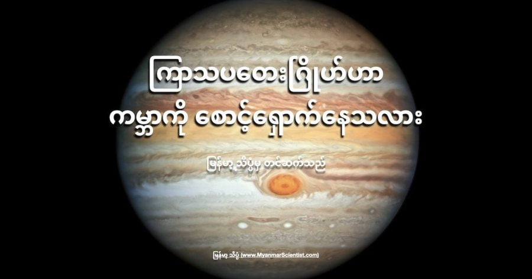

ကမ္ဘာပေါ်မှာ အသက်ရှင် နေထိုင်နေကြတဲ့ သက်ရှိတွေ အာကာသက ကျရောက်လာတဲ့ ဥက္ကာပျံ တွေရဲ့ ဘေးရန်ကြောင့် မျိုးတုန်း ပျောက်ကွယ် မသွားရအောင် ကြာသပတေးဂြိုဟ် (ဂျူပီတာဂြိုဟ်) က အကာအကွယ် ပေးထားတယ်လို့ အချို့ သိပ္ပံ ပညာရှင် တွေက ယုံကြည် ကြပါတယ်။
ဒါပေမယ့် ဒီအချက်ကို နက္ခတ် ပညာရှင် အားလုံးက တညီတညွတ်ထဲ လက်ခံ ထားကြတာတော့ မဟုတ်ပါဘူး။
ဂျူပီတာ ခေါ် ကြာသပတေး ဂြိုဟ်ဟာ နေအဖွဲ့ အစည်းထဲက ဂြိုဟ်တွေထဲမှာ အကြီးဆုံး ဖြစ်ပါတယ်။ သူ့ရဲ့ ဒြပ်ထုကလဲ အကြီးဆုံး ပါပဲ။ ဒီလို ကြီးမားတဲ့ ဒြပ်ထု ရှိတာကြောင့် သူ့ရဲ့ ဆွဲငင်အားဟာ အတော်လေးကို အားကောင်းပါတယ်။
ဒီလို အားကောင်းတဲ့ အတွက် သူ့နားက ဖြတ်သွားတဲ့ ဥက္ကာပျံတွေ၊ ဥက္ကာခဲတွေ တင်မကပဲ ဂြိုဟ်သိမ် ဂြိုဟ်မွှား တွေကိုပါ မလွတ်တမ်း ဖမ်းဆွဲ ထားနိုင်တဲ့ အထိ စွမ်းဆောင်နိုင်တယ်လို့ ဆိုပါတယ်။
နောက်ပြီး နေဖွဲ့အစည်းရဲ့ အပြင်ဖက်ခြမ်းက နေဆီကို ဦးတည် ဝင်ရောက်လာတဲ့ ကြယ်တံခွန် တွေ ဆိုရင်လဲ ဂျူပီတာရဲ့ ကြီးမားတဲ့ ဆွဲငင်အားကြောင့် မူလ လမ်းကြောင်းကနေ ပြောင်းပြီး နေအဖွဲ့အစည်းရဲ့ အပြင်ဖက်ကို လောက်လေးနဲ့ လွှဲလိုက်သလို ပစ်ပေါက် ခံကြရတယ်လို့ ယုံကြည်ကြပါတယ်။ ဒီ ကြယ်တံခွန် တွေ အထဲက အချို့ဟာဆို ဒီလိုသာ လမ်းကြောင်း မပြောင်း သွားခဲ့ရင် ကမ္ဘာနဲ့ နီးနီးကပ်ကပ်ထိအောင် ရောက်ရှိလာနိုင်တဲ့ ကြယ်တံခွန် မျိုးတွေ ဖြစ်တယ်လို့ ဆိုပါတယ်။
ဒီလို ဂျူပီတာရဲ့ ကြီးမားတဲ့ ဆွဲငင်အားရဲ့ အကာအကွယ် ရရှိထားလို့လဲ ဒီလို ပြင်ပက ရံဖန်ရံခါ ဝင်ရောက်လာတဲ့ ကြယ်တံခွန် တွေဟာ ကမ္ဘာနဲ့ တိုက်မိတဲ့ အဖြစ်မျိုး အရမ်းကို နည်းပါးတာ ဖြစ်ပါတယ်။ ပညာရှင် တွေရဲ့ လေ့လာမှု အရ ဒီလို ဝင်တိုက်မိတာ မျိုးဟာ နှစ်သန်းပေါင်း များစွာမှ တစ်ကြိမ်လောက်ပဲ ဖြစ်လေ့ရှိတယ်လို့ ဆိုပါတယ်။
အကယ်လို့ ဂျူပီတာ ကသာ ဖမ်းဆွဲမထားဘူး ဆိုရင် (သို့) လမ်းကြောင်းပြောင်းအောင် မလုပ်ပေးနိုင်ဘူး ဆိုရင် ကမ္ဘာကို ဝင်တိုက်မယ့် ကြယ်တံခွန် နဲ့ ဥက္ကာပျံ အရေအတွက်ဟာ ဒီ့ထက် ပိုများမယ်လို့ ခန့်မှန်း ကြပါတယ်။
ဒီလို ဂျူပီတာက ကြယ်တံခွန် တွေကို လမ်းကြောင်း လွဲပေးပြီး ကမ္ဘာကို အကာအကွယ် ပေးထားတာတင် မကပါဘူး။ သိပ္ပံ ပညာရှင် တွေဟာ ကြီးမားတဲ့ ဥက္ကာပျံ ကြီးတွေ၊ ကြယ်တံခွန် ကြီးတွေ ဂျူပီတာ ဂြိုဟ်ရဲ့ မျက်နှာပြင်ကို ဝင်ဆောင့်မိကြတဲ့ ဖြစ်စဉ်တွေကိုလဲ အမိအရ ဓါတ်ပုံရိုက် မှတ်တမ်း တင်နိုင် ခဲ့ကြပါတယ်။
ဥပမာ ၁၉၉၄ ခုနှစ်က Comet Shoemaker-Levy 9 ကြယ်တံခွန်ကြီးဟာ ဂျူပီတာ ကိုဝင်ဆောင့်ပြီး ဇါတ်သိမ်း သွားခဲ့ပါတယ်။ ၂၀၀၉ ခုနှစ်ကလဲ ကြယ်တံခွန် ဝင်ဆောင့်မိတယ်လို့ ယူဆရတဲ့ အမဲစက်ကြီး တစ်ခုကို ဂျူပီတာရဲ့ မျက်နှာပြင်မှာ တွေ့မြင် ခဲ့ကြပါတယ်။
ဒါပေမယ့် ဂျူပီတာရဲ့ ဆွဲငင်အားက အကောင်းချည်း ပဲလို့တော့ ပြောလို့ မရပြန်ပါဘူး။
သူ့ရဲ့ ဆွဲငင်အားကြောင့် မြောက်များလှ စွာသော ကျောက်စိုင် ကျောက်တုံးတွေဟာ ဂြိုဟ်ကြီး တစ်လုံး အဖြစ် စုစည်းခွင့် မရပဲ ဂြိုဟ်သိမ် ခါးပတ် တစ်ခု အဖြစ်ဂျူပီတာ ဂြိုဟ်နားမှာ လှည့်ပတ်နေရတဲ့ ဘဝကို ရောက်ရှိလို့ သွားပါတယ်။ ဒီ ဂြိုဟ်သိမ် ခါးပတ်ထဲမှာ ကျောက်တုံး ကျောက်ခဲတွေ အလုံးရေ သိန်းနဲ့ချီပြီး ရှိနေပါတယ်။
အခုထက် ထိအောင်လဲ ဂျူပီတာရဲ့ ဆွဲငင်အားဟာ ဒီ ဂြိုဟ်သိမ် ခါးပတ် ထဲက ကျောက်တုံးတွေ အပေါ်မှာ သက်ရောက်မှု ရှိနေပါ သေးတယ်။ မကြာခန ဆိုသလိုပဲ ဂျူပီတာရဲ့ ဆွဲအားကြောင့် ဒီ ဂြိုဟ်သိမ်ခါးပတ် ထဲက ဥက္ကာတုံး တွေဟာ မူလ လမ်းကြောင်းကနေ လွတ်ထွက်လာပြီး နေဖက်ဆီကို လွင့်ထွက် လာတတ် ကြပါတယ်။ ဒီ ကျောက်တုံးတွေဟာ အခမသင့် ခဲ့ရင် ကမ္ဘာ ဆီကို ဦးတည်ပြီး ရောက်လာကောင်း ရောက်လာနိုင်တယ်လို့ သိပ္ပံ ပညာရှင် တွေက စိုးရိမ်မကင်း ဖြစ်ကြပါတယ်။
၁၇၇၀ ခုနှစ်က လက်ဆဲလ် ကြယ်တံခွန် (Comet Lexell) ကြီးဟာ နေအဖွဲ့အစည်းရဲ့ အစွန်ကနေ ပြီး နေဖက်ကို ဦးတည် ဝင်ရောက်လာ ခဲ့ပါတယ်။ ဒီ ကြယ်တံခွန်ကြီးရဲ့ သွားရာ လမ်းကြောင်းကို သိပ္ပံ ပညာရှင် တွေက ပြန်ပြီး တွက်ချက်ကြည့်တဲ့ အခါမှာ ဒီ ကြယ်တံခွန်ဟာ ဂျူပီတာ ဂြိုဟ်နား ရောက်တဲ့ အခါ ဂြိုဟ်ရဲံ ဆွဲအားကြောင့် မူလ သွားရာ လမ်းက သွေဖီပြီး ကမ္ဘာဖက်ဆီကို ဦးတည်ရာ ပြောင်းသွားခဲ့ ပါတယ်။
ဒီ ကြယ်တံခွန် ကြီးဟာ ကမ္ဘာနဲ့ မိုင် တစ်သန်းပဲ ဝေးတဲ့ အကွာအဝေးကနေ ဖြတ်သွား ခဲ့ပါတယ်။ နောက် နှစ်ကြိမ် ဒီလိုပဲ ကမ္ဘာနားက ဖြတ်ပျံ အပြီးမှာတော့ ဂျူပီတာနားကနေ ကပ်ဖြတ်ပြီး နေအဖွဲ့အစည်းရဲ့ အပြင်ဖက်ကို ပြန်လည် ထွက်ခွာ သွားပါတယ်။
နက္ခတ် ပညာရှင် တွေက ဒီ အဖြစ်အပျက်ကို “ဂျူပီတာက ကမ္ဘာကို ချိန်ရွယ်ပြီး ကြယ်တံခွန်နဲ့ ပေါက်လိုက်တာ သီသီလေး ကပ်လွဲသွားတယ်” လို့ တင်စား ပြောကြပါတယ်။
ဒီတော့ ဂျူပီတာဟာ ကမ္ဘာကို ဥက္ကာပျံ တွေရဲ့ ရန်ကနေ ကာကွယ်ပေးသလို တချိန်ထဲမှာ သူ့ဟာသူ သွားနေတဲ့ ဥက္ကာပျံ တွေကိုလဲ ရံဖန်ရံခါ ဆိုသလို ကမ္ဘာဖက်ကို လမ်းကြောင်းလွှဲပြီး ပို့ပေးတတ်တဲ့ နှစ်ဖက်ချွန် ဂြိုဟ် ဖြစ်နေပါကြောင်း တင်ပြ လိုက်ရပါတယ်။
Reference: Is it true that Jupiter protects Earth? | Earth Sky
ကြာသပတေးဂြိုဟ်ဟာ ကမ္ဘာကို စောင့်ရှောက်နေသလား

January 24, 2022
Other Posts
- အပင်များ၏ အော်ဟစ်ညီးတွားသံ သိပ္ပံ ပညာရှင်များ ရှာဖွေတွေ့ရှိ
- ဆေးတစ်လုံးထိုးရုံနှင့် ကင်ဆာပျောက်အောင် ကုနိုင်တော့မည်
- ဘာ့ကြောင့် လက်ဆစ်ချိုးရင် အသံမြည်ရတာလဲ
- စကြာဝဠာဟာ black hole တွင်းနက်တစ်ခုအတွင်းမှာ တည်ရှိနေတာလား
- စကြာဝဠာရဲ့ ပထမဆုံး ဂလက်ဆီ ၇၁၇ ခု ဂျိမ်စ်ဝက်ဘ် ရှာတွေ့ထားပြီ
- သမုဒ္ဒရာ ကြမ်းပြင်မှ မီးတောင် ၁၉,၀၀၀ ကျော် ရှာတွေ့
- ကမ္ဘာ့ ပထမဆုံး လေယဉ်တင် လေဆာ လက်နက်
- ကမ္ဘာ့ သံလိုက်စက်ကွင်း ပြောင်းပြန်ဖြစ်ခဲ့လျှင်
- အထက်တန်း ကျောင်းသားလေး သစ်သားနဲ့ ဆောက်ထားတဲ့ ကား
- ဗုဒ္ဓဟူးဂြိုဟ်ရဲ့ အမြှီး